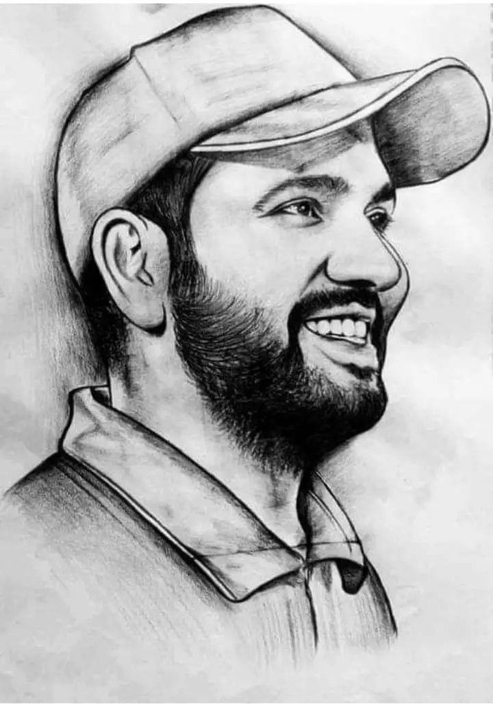
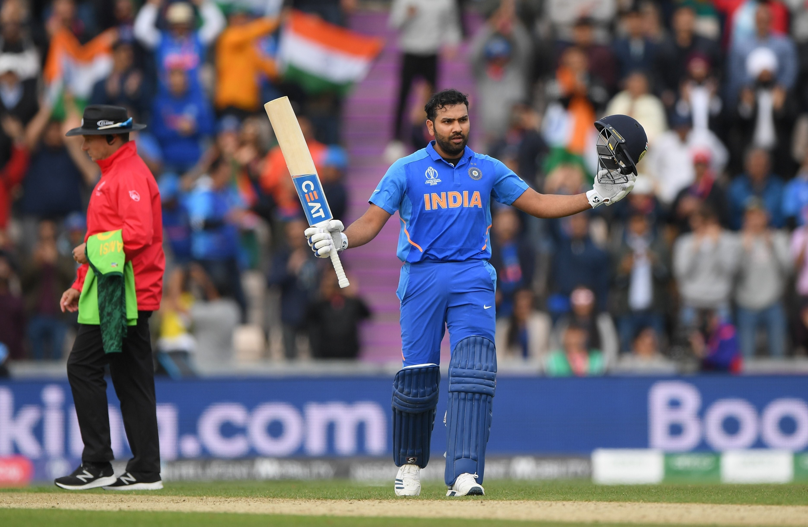
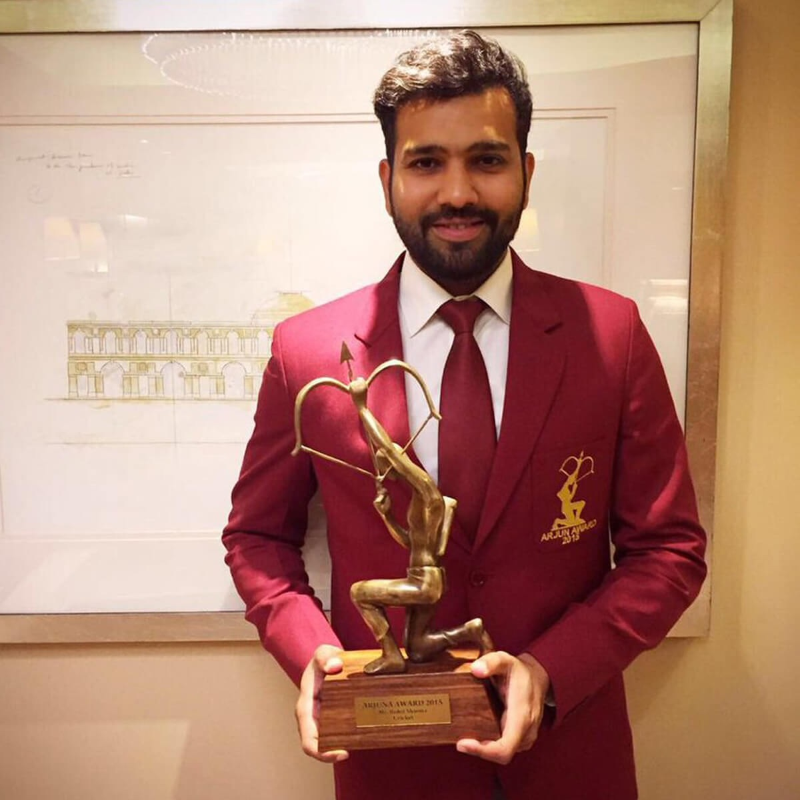

THE HITMAN
Rohit Gurunath Sharma is an Indian international cricketer who is the current captain of the Indian national team. A right-handed opening batsman and an occasationional right-arm off break bowler, he is widely acknowledged as one of the most outstanding batsmen in limited overs cricket.
Born: 30 April 1987 (age 34 years), Nagpur
Height: 1.7 m
Spouse: Ritika Sajdeh (m. 2015)
Dates joined: 2011 (Mumbai Indians)
Children: Samaira Sharma
Awards: Arjuna Award for Cricket, Major Dhyan Chand Khel Ratna Award for Cricket
Parents: Gurunath Sharma, Purnima Sharma

HISTORY
The history of the hitmanSharma joined the Indian Premier League (IPL) in 2008 when he was signed by the Deccan Chargers franchise, based in Hyderabad, for the sum of US$750,000 a year.In the 2011 auction, he was sold for US$2 million to the Mumbai Indians.He scored his only IPL century in the 2012 tournament with 109 (not out) against the Kolkata Knight Riders.Under his leadership, Mumbai has won the IPL in 2013, 2015, 2017, 2019 and 2020; they also won the former Champions League Twenty20 competition in 2013.
Sharma has been one of the most successful players in the IPL as captain since 2013 of the Mumbai Indians, who have won the tournament five times under his leadership. .

ACHIEVEMENTS
Sharma holds the world record for the highest individual score by a batsman playing in a one-day international match, having scored 264 against Sri Lanka at Eden Gardens, Kolkata, on 13 November 2014.He is the only player to have scored three double-centuries in this form of international cricket.In January 2020, Sharma was named as the ODI Player of the Year by the International Cricket Council (ICC).During the 2019 World Cup, Sharma became the only batsman to scored five centuries in a single edition of the Cricket World Cup.
On 5 October 2019, during a Test match against South Africa, Sharma became the first batsman to score two centuries in a match on his first appearance as an opening batsman.In the same series, he broke Shimron Hetmyer's record for the highest number of sixes in a Test series.[90]
National honours
Sharma receiving Arjuna award
2015 – Arjuna Award
2020 – Major Dhyan Chand Khel Ratna
Sporting honours
ICC Men's ODI Cricketer of the Year: 2019
ICC Men's ODI Team of the Year: 2014 (12th man), 2016, 2017,2018,2019
ICC ODI Team of the Decade: 2011–2020
ICC Men's Test Team of the Year: 2021

"Sharma is an active supporter of animal welfare campaigns. He is the official Rhino Ambassador for WWF-India and is a member of People for the Ethical Treatment of Animals (PETA)."
THANK YOU